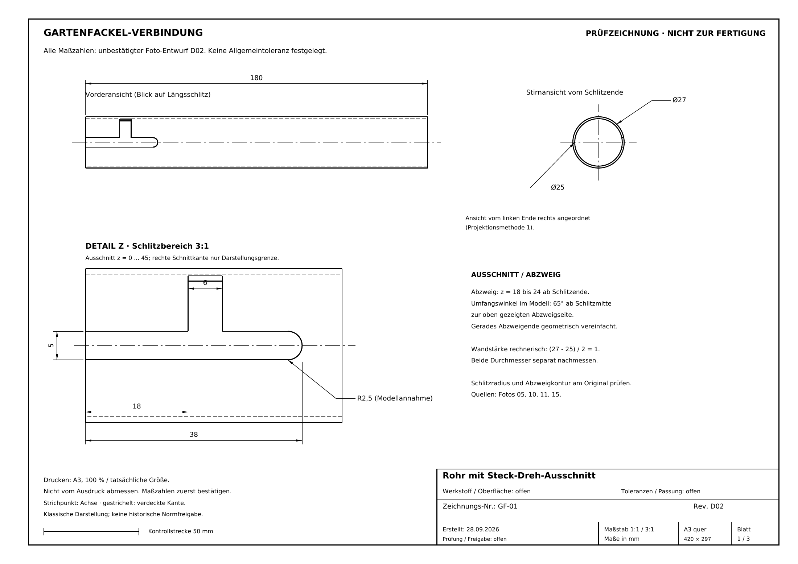

ZWEITEILIGE VERBINDUNG / D02
Die Form gemeinsam prüfen.
Foto-Entwurf · unbestätigt
D02 / mmKeine Fertigungsfreigabe
Ziehen: drehen · Scrollen / zwei Finger: zoomen
TECHNISCHE ZEICHNUNGEN / D02
Werkstattansicht
Drei A3-Blätter direkt ansehen. Alle Maße sind unbestätigt.

ABGLEICH MIT DEM ORIGINAL
Referenzfoto

Zum Vergrößern auf das Foto tippen. Ausschnitt und Drehrichtung sind noch zu bestätigen.